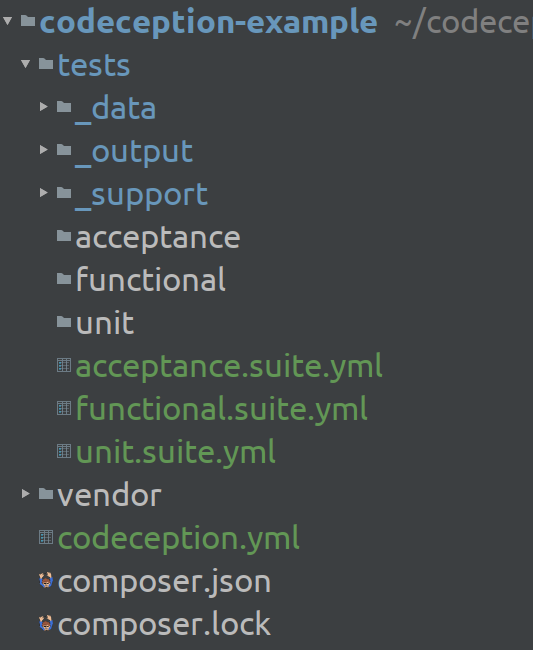

Testing with
Codeception
Agenda
- What is Codeception?
- What can I do with it?
- How to setup
- ... and configure?
- Hands on coding challenge
Tests, but why and how?
- We all make mistakes.
⇒ we want tests - "I click around in the browser after code changes"
... that's not what I meant - we want to write test files
- and run those tests after every change
⇒ We want automated tests!
Ok, tell me more! Why Codeception?
- "Elegant and Efficient Testing for PHP"
- more than just PHPUnit
⇒ All-In-One solution - since 2011
- CLI tool
- easy debugging
Ok, tell me more! Why Codeception?
- test suites for different types of tests
- also supports BDD with Gherkin
- helpers for most common tasks
Codeception helpers
$I->wantTo('test the code')UnitTester $IApiTester $I- ...
- extendable via modules
- extendable via own methods
Codeception\Util\HttpCode::OKCodeception\Util\Stub::make(MyApi::class)
UnitTester $I
$I->wantTo('Test only one unit of code')- you can reuse your old PHPUnit tests
- module 'Asserts'
$I->assertTrue($unit->isWorking()); $I->assertContains('hello', $greeting); $I->assertEquals(5, $unit->getCount());
"Talk is cheap. Show me the code."~ Linus Torvalds
public function testConstructor(UnitTester $I)
{
$exception = new \Exception();
$I->assertInstanceOf(\Exception::class, $exception);
}
public function testGetMessage(UnitTester $I)
{
$message = 'foobar';
$exception = new \Exception($message);
$I->assertEquals($message, $exception->getMessage());
}
/**
* @example ["de", "male", "Doe", "Sehr geehrter Herr Doe,"]
* @example ["en", "male", "Doe", "Dear Mr Doe"]
* @example ["de", "female", "Doe", "Sehr geehrte Frau Doe,"]
* @example ["en", "female", "Doe", "Dear Ms Doe"]
*/
public function testGetSalutation(UnitTester $I, Example $example)
{
$salutation = MyMailHelper::getSalutation(
$example[0],
$example[1],
$example[2]
);
$I->assertEquals($example[3], $salutation);
}
public function testExceptionOnInvalidLanguage(UnitTester $I)
{
// Give it either just a class name
$I->expectThrowable(
\InvalidArgumentException::class,
function () {
MyMailHelper::getSalutation('foobar', 'male', 'Test');
}
);
// Or an instance of a Throwable
$I->expectThrowable(
new \InvalidArgumentException('language not implemented'),
function () {
MyMailHelper::getSalutation('foobar', 'male', 'Test');
}
);
}
Am I done now?
So you think you're done?


Things you don't want to experience in production environment
Don't settle down on unit tests
- add some integration tests
⇒ into unit test suite
⇒ or into separate test suite - make use of those Codeception modules
FunctionalTester $I
FunctionalTester $I$I->wantTo('make sure the application works as expected')- generally a bit slower than unit tests
- no running webserver required
- fakes
$_REQUEST/$_GET/$_POST - may not work with all types of applications
- fakes
FunctionalTester $I
FunctionalTester $I- modules:
- For your framework (Symfony/Laravel/Silex/...)
- DB (populate/cleanup)
- Doctrine:
$I->haveInRepository(Client::class, ['name' => $testName])$I->seeInRepository(Client::class, ['id' => $testId])
public function _before()
{
$I->haveInRepository(
User::class,
[
'username' => 'foobar',
'mail' => 'foo.bar@example.com',
'password' => Password::encrypt('test'),
]
);
}
/**
* @example ["foobar", "test"]
* @example ["foo.bar@example.com", "test"]
*/
public function testLogin(FunctionalTester $I, Example $example)
{
$I->amOnPage('/');
$I->seeResponseCodeIs(HttpCode::OK);
$I->seeCurrentRouteIs('login');
$I->submitForm(
'login',
[
'_username' => $example[0],
'_password' => $example[1],
]
);
$I->seeResponseCodeIs(HttpCode::OK);
$I->see('Hello foobar!');
$I->see('Logout');
}
AcceptanceTester $I
AcceptanceTester $I$I->wantTo('click around in the browser')- frontend tests
- selenium integration
- test AJAX calls / JS
- ...
- can get really slow
- running webserver required
/**
* @example ["https://google.com"]
* @example ["https://duckduckgo.com"]
*/
public function testSearchForCodeception(
AcceptanceTester $I,
Example $example
)
{
$I->amOnUrl($example[0]);
$I->fillField(['name' => 'q'], 'Codeception');
$I->pressKey(['name' => 'q'], WebDriverKeys::ENTER);
$I->see('Codeception', 'a');
$I->seeElement('a', ['href' => 'https://codeception.com/']);
}
ApiTester $I
ApiTester $I$I->wantTo('send HTTP requests to the API')- 'REST' module
- check HTTP response codes
- check JSON
- grab response and perform custom assertions
- ...
- runs quite fast
- running webserver required
/**
* @example ["de", "Germany"]
* @example ["us", "United States of America"]
*/
public function testCountrySearchByISOAlpha2(
ApiTester $I,
Example $example
) {
$I->sendGET(
'https://restcountries.eu/rest/v2/alpha/'.$example[0]
);
$I->seeResponseCodeIs(HttpCode::OK);
$I->seeResponseIsJson();
$I->seeResponseMatchesJsonType([
'name' => 'string',
'population' => 'integer',
]);
$I->seeResponseContainsJson([
'name' => $example[1]
]);
}
public function testErrorOnInvalidISOAlpha2(ApiTester $I)
{
$I->sendGET('/alpha/xyz');
$I->seeResponseCodeIs(HttpCode::NOT_FOUND);
$response = json_decode($I->grabResponse(), true);
$I->assertEquals('Not Found', $response['message']);
codecept_debug($response);
}
public function testErrorOnPost(ApiTester $I)
{
$I->haveHttpHeader('Content-Type', 'application/json');
$I->sendPOST('/alpha/de', ['nope' => 'nope']);
$I->seeResponseCodeIs(HttpCode::METHOD_NOT_ALLOWED);
}
Want to know how to get all this?
First steps
Install Codeception:$ composer require --dev codeception/codeception
Initialize Codeception:
$ vendor/bin/codecept bootstrapAfter Bootstrap

paths:
tests: tests
output: tests/_output
data: tests/_data
support: tests/_support
envs: tests/_envs
actor_suffix: Tester
extensions:
enabled:
- Codeception\Extension\RunFailed
codeception.yml
# Codeception Test Suite Configuration
#
# Suite for unit or integration tests.
actor: UnitTester
modules:
enabled:
- Asserts
- \Helper\Unit
tests/unit.suite.yml
What about API tests?
Generate an api test suite:$ vendor/bin/codecept generate:suite api
$ vendor/bin/codecept generate:suite api
Helper \Helper\Api was created in ~/example/tests/_support/Helper/Api.php
Actor ApiTester was created in ~/example/tests/_support/ApiTester.php
Suite config api.suite.yml was created.
Next steps:
1. Edit api.suite.yml to enable modules for this suite
2. Create first test with generate:cest testName ( or test|cept) command
3. Run tests of this suite with codecept run api command
Suite api generated
Step 1: enable modules
actor: ApiTester
modules:
enabled:
- \Helper\Api
- Asserts
- REST:
url: https://restcountries.eu/rest/v2
depends: PhpBrowser
part: Json
tests/api.suite.yml
Important: rebuild the actors/testers!
$ vendor/bin/codecept buildStep 1: enable modules
actor: FunctionalTester
modules:
enabled:
- \Helper\Functional
- Asserts
- Symfony:
app_path: 'src'
environment: 'test'
- Doctrine2:
depends: Symfony
tests/functional.suite.yml
Remember:
$ vendor/bin/codecept buildStep 2: types of test files
- Test
- basically PHPUnit
- with some Codeception stuff around
- Cept
- one file per test/scenario
- Cest (recommended)
- object oriented version of Cept
- one test file per class/unit
- before/after hooks etc.
Step 2: create Cest test files
$ vendor/bin/codecept generate:cest suite class$ vendor/bin/codecept generate:cest unit "App\MyMailHelper"$ vendor/bin/codecept generate:cest functional Controller/LoginCest.php$ vendor/bin/codecept generate:cest acceptance Login
class LoginCest
{
public function _before(AcceptanceTester $I)
{
}
// tests
public function tryToTest(AcceptanceTester $I)
{
}
}
Interlude: TDD buzzword bingo
- red ⇒ green ⇒ refactor
- baby steps / YAGNI
- arrange ⇒ act ⇒ assert
- one assertion per test
- write a test before fixing a bug
⇒ code will be cleaner & simpler & easier to maintain
Step 3: run tests
$ vendor/bin/codecept run$ vendor/bin/codecept run unit$ vendor/bin/codecept run tests/unit/ExceptionCest.php
Useful parameters:
-
--debug
+codecept_debug()
+$I->pause() - --fail-fast
- -g failed
- --coverage
Configure code coverage report
[...]
coverage:
enabled: true
include:
- src/*
codeception.yml
Hint: you also need to enable Xdebug
Check code coverage
$ vendor/bin/codecept run --coverage --coverage-html --coverage-xml- HTML report: nicely rendered version for viewing in a browser
- XML report: for usage via other tools (PhpStorm, codecov.io, ...)
Get bonus points for
- setting up Codeception in your IDE
- to automatically rerun tests on changes
- or have a shortcut for running the tests
- configuring a job in your CI pipeline to
- run tests
- check coverage
Codeception is ...
- easy to setup
- simple by default
- configurable/extendable
- fun to use
 Codeception/Codeception
Codeception/Codeception
codeception.com
 @codeception
@codeception
Challenge: Let's roll
- Dice: roll() ⇒ random int 1-6
- Game(array $dice): score() ⇒ roll all 6 Dice + calc. score
rules
- a single one: 100 points / a single five: 50 points
- three of a kind: 100 x rolled number
- except for three ones: 1000 points
- for each additional of that kind: double the score
- three pairs: 800 points
- straight: 1200 points